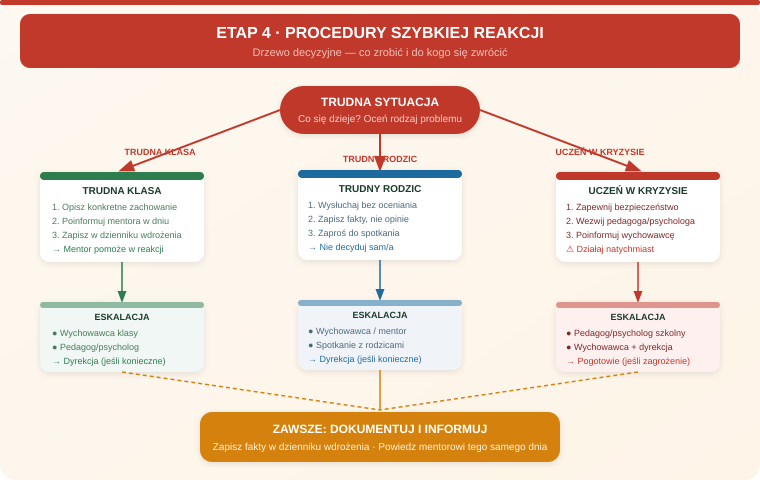

Zadania mentora
- Omówić procedurę kontaktu z rodzicem.
- Przećwiczyć scenariusz trudnej klasy.
- Wskazać pedagoga, psychologa, wychowawcę i dyrekcję jako ścieżki eskalacji.
- Wyjaśnić wypadek, zasłabnięcie i zwolnienie ucznia z lekcji.
Etap 4
Cel: nauczyciel zna ścieżki działania w sytuacjach trudnych i wie, kogo włączyć przy decyzjach wychowawczych, formalnych i kryzysowych.

Wpisz: procedury wyjaśnione, osoby kontaktowe, sytuacje wymagające konsultacji i termin rozmowy po pierwszym miesiącu.
Nauczyciel zauważa, zabezpiecza sytuację i przekazuje fakty. Nie prowadzi samodzielnej diagnozy kryzysu, nie rozstrzyga spraw kadrowych i nie zostaje sam z decyzją wymagającą dyrekcji.